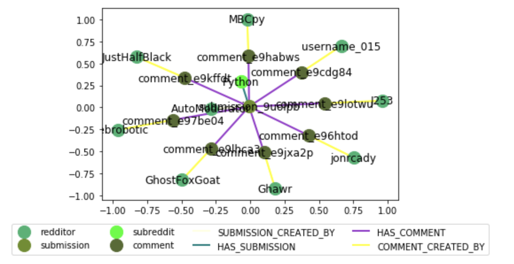
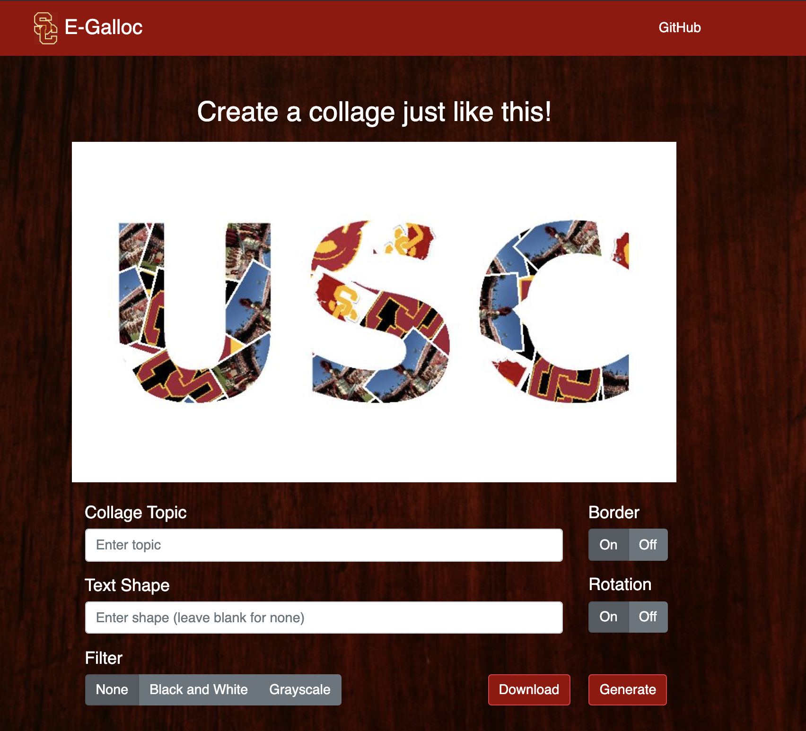
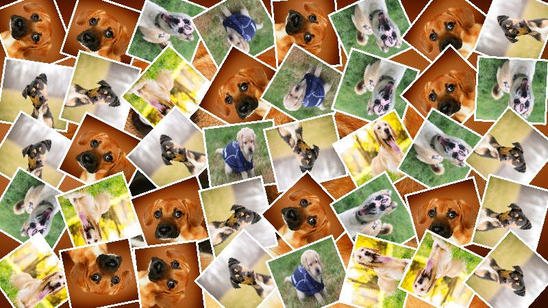

PROJECTS
-
GraphiPy - Capstone Group Project
Aug 2018 - Dec 2018An open-source Python library that provides a unified interface to APIs of different websites with social data content (such as Youtube, Facebook, Reddit).
The project was developed under the guidance of Dr. Shobeir Fakhraei. (USC ISI)
Focused on designing a graph data structure to store the social data information, which can later be exported to external data visualization tools like Gephi and NetworkX.
For example, the following graph shows data visualization (via Gephi) of 20 youtube videos with keyword "dota2":
NetworkX:
GraphiPy was published on PyPI and reached 18k downloads.
-
Egalloc
Jan 2018 - May 2018Original deployed version (database removed)
UI updated version by teammate William Tjandra

Egalloc is a fullstack application for building custom collages. It provides flexible visualization of searched topics.
Egalloc will generate a collage using first 30 images appeared on Google Search.
Implemented backend image downloading component in Java utilizing multi-thread techniques, improved the downloading process time to less than 10 seconds.
Built the processing engine by Integrating with Google Custom Search API to extract and process the searching results.
Developed the in-memory caching mechanism for the searched results, improved the end-to-end latency by 63%.
Led the testing automation cycle, designed the whole white-boxing and black-boxing testing frameworks using Cobertura, Cucumber, and Selenium.
Designed 60 test cases, increased unit test coverage from 50% to 90% using JUnit, reached 100% branch coverage, reduced the critical issue rate for the system by 55%.
Examples:

 -
GO EAT!
Dec 2017An iOS application written in Objective-C that helps users make decision on which restaurant to eat depending on their preferences.
The app was implemented by using YelpAPI and MapKit.
Nearby matched restaurants will be pinned on a map.